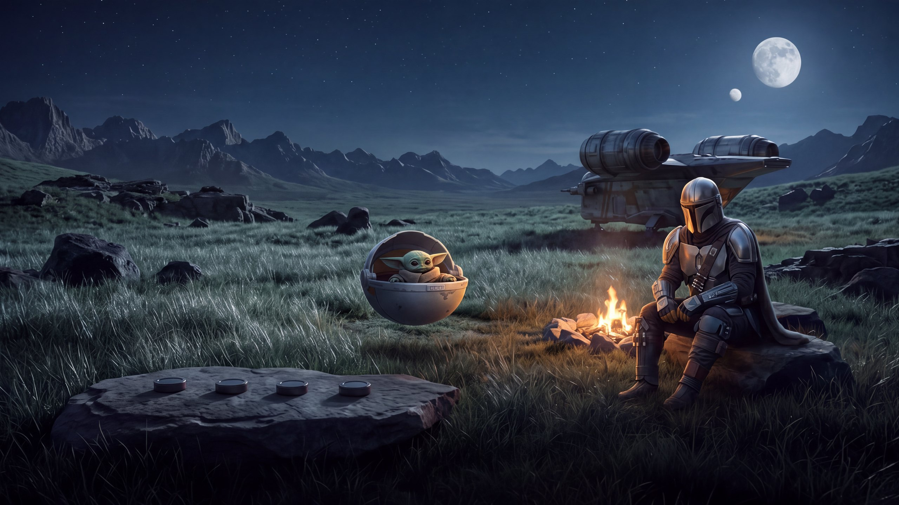
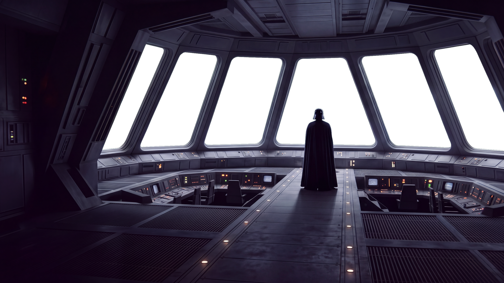

Customise


Customise your cockpit
Pick up to six apps for the cockpit, in the order you want them, then where the films and series open. Up in the cockpit brings you back here.
The apps
The films and series open in
Done
Start again